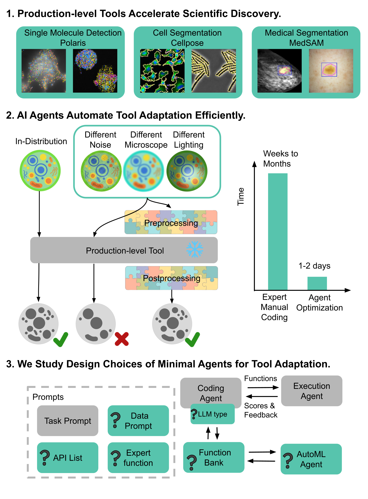
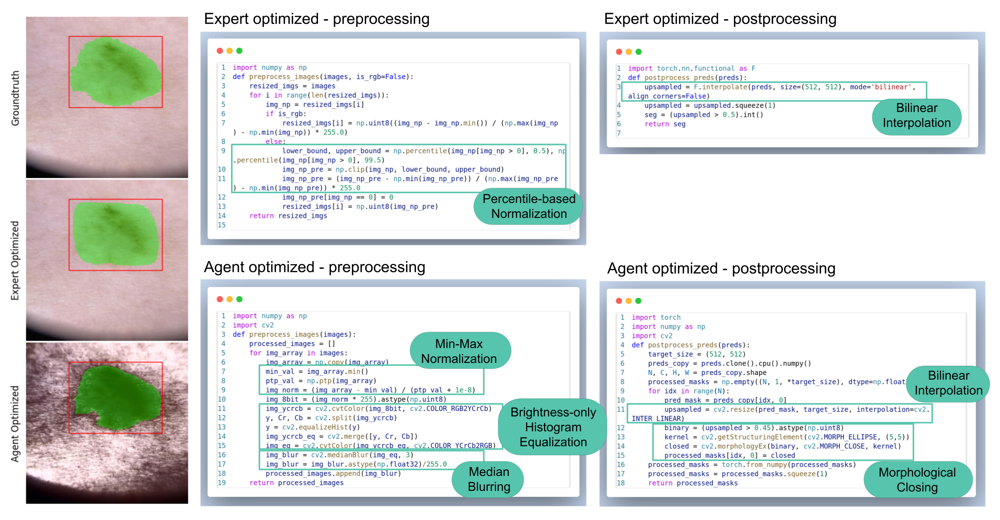
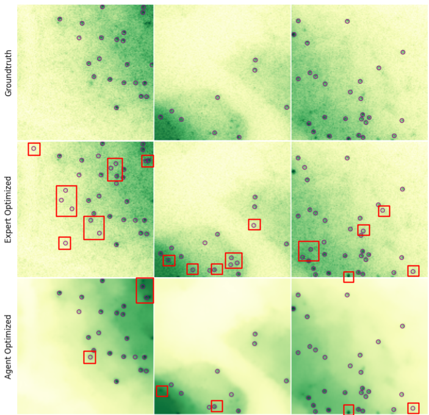
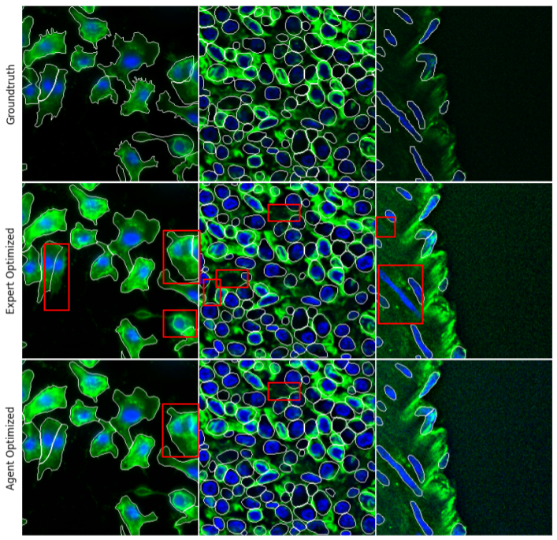
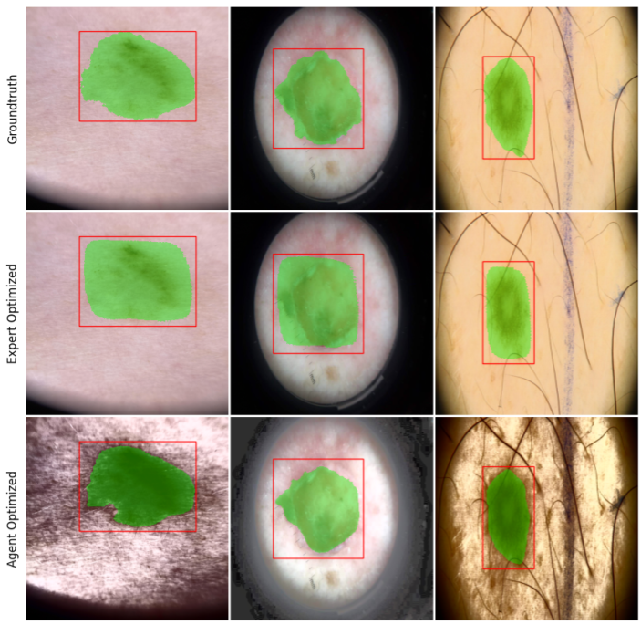

1Caltech 2Cornell 3UT Austin 4Rensselaer Polytechnic Institute
Adapting production-level computer vision tools to bespoke scientific datasets is a critical “last mile” bottleneck. Current solutions are impractical: fine-tuning requires large annotated datasets scientists often lack, while manual code adaptation costs scientists weeks to months of effort. We consider using AI agents to automate this manual coding, and focus on the open question of optimal agent design for this targeted task. We introduce a systematic evaluation framework for agentic code optimization and use it to study three production-level biomedical imaging pipelines. We demonstrate that a simple agent framework consistently generates adaptation code that outperforms human-expert solutions. Our analysis reveals that common, complex agent architectures are not universally beneficial, leading to a practical roadmap for agent design. We open source our framework and validate our approach by deploying agent-generated functions into a production pipeline, demonstrating a clear pathway for real-world impact.
A minimal two-agent system (coding agent + execution agent) consistently generates adaptation code that surpasses expert-engineered solutions across all three biomedical imaging tasks—replacing weeks to months of manual tuning.
Design choices like expert functions, reasoning LLMs, and function banks show mixed effects—what helps one task hurts another. Only the data prompt is universally beneficial. Omitting the API list consistently improved scores.
We introduce a framework characterizing each task’s solution space along two axes: API space (concentrated vs. dispersed) and parameter space (easy vs. hard to optimize). This explains the mixed effects and provides a practical roadmap for agent design.
When benchmarked against the AIDE agent (tree-search architecture) with comparable compute budgets, our open-source minimal agents achieve equivalent performance with greater transparency and lower cost.

Design Choice Study. Across all agent settings, all except the “Small LLM” outperform the expert baseline. We observe mixed effects across many design choices—what helps one task can hurt another.
| Expert Baseline |
Base Agent |
+ Expert Function |
+ Function Bank |
Reasoning LLM |
Small LLM |
No Data Prompt |
No API List |
|
|---|---|---|---|---|---|---|---|---|
| Polaris F1 | 0.841 | 0.867 | 0.929 | 0.889 | 0.844 | 0.805 | 0.856 | 0.868 |
| Cellpose AP@0.5 | 0.402 | 0.409 | 0.410 | 0.416 | 0.412 | 0.397 | 0.406 | 0.417 |
| MedSAM NSD+DSC | 0.820 | 0.971 | 0.888 | 0.943 | 1.020 | 0.918 | 0.952 | 1.037 |


Metric: F1 score · Expert: 0.841 · Best agent: 0.929
Detecting sub-pixel fluorescent spots for image-based spatial transcriptomics across modalities using different RNA capturing and tagging methods. Validated on 95 images.

Metric: AP @ IoU 0.5 · Expert: 0.402 · Best agent: 0.417
Cell instance segmentation on multiple modalities including whole cell & nucleus, fluorescent, and phase bacterial images. Validated on 100 images.

Metric: NSD + DSC · Expert: 0.820 · Best agent: 1.037
Medical image segmentation using an extension of the Segment Anything Model adapted to medical domains, evaluated on dermoscopy data. Validated on 25 images.
Clone the repository and install dependencies using uv. See the Adding a Task guide for extending the framework to new workflows.
# Clone and install git clone https://github.com/xuefei-wang/simple-agent-opt.git cd simple-agent-opt uv venv && source .venv/bin/activate uv pip install -e ".[cellpose]" # or .[polaris], .[medsam] # Set your API key export OPENAI_API_KEY="your-key-here" # Run an experiment python main.py \ --dataset /path/to/data \ --experiment_name cellpose_segmentation \ --random_seed 42 -k 3
If you find this work useful, please cite our paper:
@inproceedings{wang2026simple,
title = {Simple Agents Outperform Experts in Biomedical Imaging
Workflow Optimization},
author = {Wang, Xuefei and Horstmann, Kai A. and Lin, Ethan and
Chen, Jonathan and Farhang, Alexander R. and Stiles, Sophia and
Sehgal, Atharva and Light, Jonathan and Van Valen, David and
Yue, Yisong and Sun, Jennifer J.},
booktitle = {Proceedings of the IEEE/CVF Conference on Computer Vision
and Pattern Recognition (CVPR)},
year = {2026},
note = {to appear}
}